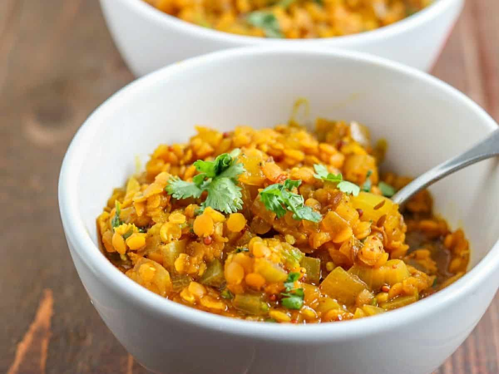

Spicy Tarka Lentil Daal

Description
This is probably the most cooked dish in India
as it is a healthy source of vegetarian protein and is very satisfying.
These buttery lentils are lifted with warming spices, zingy ginger,
savoury garlic, and tangy tomatoes.
Ingredients
-
- Cooked Lentils 50% [Water, Lentils (Pigeon Pea, Mung Lentil)]
- Onions
- Sunflower Oil
- Tomato Paste
- Garlic
- Turmeric
Steps
-
-
Heat 1 tsp. oil/ghee in a sauce- pan until hot. Add the spices (add the chilli for optional extra heat). Take off the heat and cook for 15 seconds.
-
Put the pan back on the heat and stir in the lentils (from the large pouch).
-
Add in the tarka sauce (from the medium pouch) and 4-5 tbsp. (1/4 cup) of water, bring to a simmer and serve.